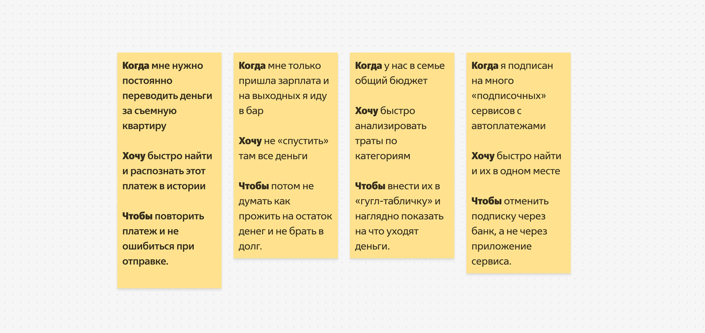
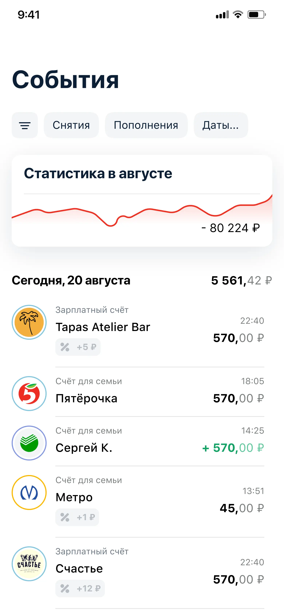
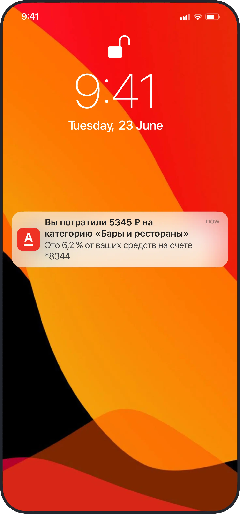

Альфа-Банк. Пользовательское исследование и редизайн раздела Аналитика для iOS
UX-исследование и редизайн раздела финансовой аналитики в мобильном приложении Альфа-Банка. Глубинные интервью, анализ паттернов, прототипирование.

UX-исследование и редизайн раздела финансовой аналитики в мобильном приложении Альфа-Банка. Глубинные интервью, анализ паттернов, прототипирование.
Провести пользовательское исследование раздела финансовой аналитики и предложить редизайн, который сделает данные читаемыми и полезными для клиентов банка.
Текст — заменим на реальный. Описание методологии исследования, рекрутинга респондентов и ключевых вопросов глубинных интервью.


Линейный график показывал тенденцию только за месяц и ничего не давал для принятия решений.
Заменил на столбчатую диаграмму за год, вывел категории наружу как фильтры сразу на главную без лишних переходов.
Улучшил контролы, вывел все категории и быстрые фильтры.
Исследование показало, что проблема шире подписок: за годы копится десяток автосписаний. Сделали тег «Автоплатёж» для идентификации и кнопку «Запретить автопополнение» прямо на странице платежа.

Из интервью узнали, что люди регулярно перетрачивают и потом не могут дожить до зарплаты. Спроектировал пуш-уведомления: >3 транзакций в категории + >5% остатка = предупреждение.
Клиенты используют историю расходов не для статистики, а для конкретных задач: не перетратить, повторить платёж, отменить подписку, свести бюджет.
Аналитика воспринималась как декорация: линейный график за месяц не давал ни сравнения, ни контекста для решений. Нужны были данные за несколько месяцев и быстрый срез по категориям.
Проблема подписок оказалась шире ожидаемого: за годы у клиентов накапливается по 10–15 автосписаний, о части которых они уже забыли. Простой идентификации недостаточно — нужна отмена в одно касание.
Перерасход — хронический паттерн, а не исключение. Люди осознают проблему только постфактум. Превентивное уведомление на пороге перерасхода стало наиболее востребованным из предложенных решений.